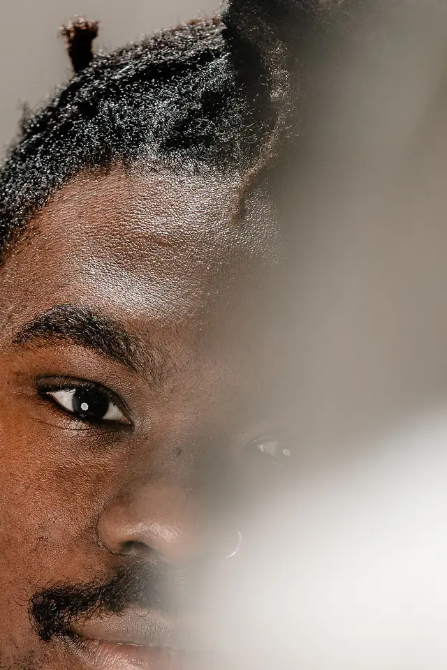

DJ in Dachau
Direkt vor den Toren Münchens, mit Schloss über der Altstadt und einer traditionsreichen Künstlerkolonie: Dachau feiert charmant und nah. Benji Holiday ist in Minuten da — kurze Anfahrt, günstige Fahrtkosten, voller Sound.
Resident-Erfahrung: Rote Sonne · Bob Beaman · Harry Klein

Dein DJ direkt vor den Toren Münchens
Nur rund 20 km nordwestlich der Landeshauptstadt gelegen, ist Dachau für Benji Holiday praktisch ein Katzensprung. Diese Nähe hat einen handfesten Vorteil: Die Anfahrt bleibt kurz, die Fahrtkosten niedrig — und auch kurzfristige Termine lassen sich flexibler einrichten als bei weiter entfernten Orten. Zugleich ist Dachau alles andere als ein bloßer Vorort: Über der Altstadt an der Amper thront das Schloss mit seinem Hofgarten, und die historische Künstlerkolonie hat der Stadt ein kreatives, eigenständiges Flair gegeben.
Gerade das Schloss und sein Garten sind eine dankbare Kulisse für Hochzeiten und festliche Anlässe. Bei Feiern, die drinnen beginnen und draußen weitergehen, plant Benji den Aufbau so, dass der Sound in beiden Welten sitzt — mit einem Wetter-Plan B, falls es im Freien nötig wird.
Feiern mit kurzer Anfahrt aus München
Ob Hochzeit im Schlossambiente, Gartenfest in der Altstadt, Vereins- oder Firmenfeier: Benji stimmt Musikauswahl, Lautstärke und Technik im Vorfeld genau auf Anlass und Ort ab. Dank der Nähe zu München bleibt dabei der Fahrtkosten-Anteil besonders gering — mehr Budget für den Abend, weniger für die Anreise. Wunschsongs und eine klare No-Go-Liste inklusive.
Faire, klare Preise
Detaillierte Aufschlüsselung auf der DJ-Übersicht.
DJ in Dachau — gut zu wissen
Wie hoch sind die Fahrtkosten für einen DJ in Dachau?
Dachau liegt nur rund 20 km nordwestlich von München — eine der kürzesten Anfahrten überhaupt. Mit 0,35 €/km bleibt der Fahrtkosten-Anteil sehr klein und wird vorab transparent im festen Angebot ausgewiesen.
Legst du auch bei Feiern im Schloss Dachau oder im Hofgarten auf?
Ja. Das Schloss mit Hofgarten über der Altstadt ist eine wunderschöne Kulisse. Für Schloss- und Garten-Locations plane ich Aufbau und Technik so, dass der Sound drinnen wie draußen sitzt — mit Wetter-Plan B im Freien.
Bist du auch kurzfristig aus München in Dachau?
Dank der Nähe von nur rund 20 km bin ich schnell und flexibel vor Ort. Auch spontanere Termine lassen sich dadurch oft realisieren — einfach anfragen, dann prüfe ich die Verfügbarkeit.